| Перейти до: |
Головна |
| -------------------------------------------------------------------------------------------------------------------------------------------------------------------------------------------------- Аніме | Історія | Етимологія | Особливості | Графіка | Сюжет | Символіка | Звук та музика | Жанри аніме | Формат аніме | Телесеріал | OVA | ГАЛЕРЕЯ -------------------------------------------------------------------------------------------------------------------------------------------------------------------------------------------------- |
|
|
Аніме 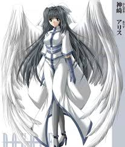 Аніме — японська анімація. Головна відмінність від мультиплікації інших країн полягає в тому, що аніме орієнтується не на дитячу, а переважно на підліткову чи навіть дорослу аудиторії. Аніме — це добре розвинений вид мистецтва і тому користується популярністю не лише в Японії, але і у світі. Аніме часто (але не завжди) відрізняється характерною манерою зображення персонажів та фону. Випускається в формі телевізійних серіалів, а також фільмів, що розповсюджуються на відеоносіях або пристосовані для кінопоказу. Для аніме характерне надзвичайне жанрове різноманіття, яке в інших країнах притаманне кіно, а не мультиплікації. Окрім загальних жанрів (бойовик, детектив тощо), є і специфічні, властиві лише аніме. Саме різноманітність та орієнтація на глядачів різного віку є головними перевагами аніме. В інших країнах анімація є переважно абстрактним мистецтвом для дітей, або ж використовується для пародійних та гумористичних творів, в той час як аніме — повноцінне мистецтво. Більша частина аніме-серіалів — це екранізація японських коміксів — манґи, втім є й екранізації книжок, а також повністю самостійні роботи. Аніме — це анімація виготовлена тільки в Японії, тому твори в анімешній стилістиці, але створені в інших країнах не є аніме. Наприклад Аватар — Легенда про Аанга. Історія Аніме зародилося на початку XX століття, коли японські кінорежисери почали перші експерименти з, винайденою на Заході, технікою мультиплікації. Перші японські анімаційні фільми були маленькі — від однієї до п’яти хвилин, і робилися вони художниками-одинаками, що намагалися відтворювати ранні досліди американських і європейських мультиплікаторів. Також особливістю раннього аніме можна назвати те, що у героїв було по чотири пальці. Це давня, ще американська традиція, пов'язана з тим, що чотири пальці простіше малювати, і виглядають вони краще. Однак згодом стандартом стали все ж таки п'ять пальців, оскільки цього вимагали організації, що захищали права однієї з верств населення — буракумін (останні в минулому працювали зі шкірою і м'ясом чотириногих тварин, вираз і жест «чотири пальці» були їх образливим позначенням). Найпершим японським анімаційним фільмом вважають «Новий альбом нарисів» («Декобоко Шін Ґате», (1917) Декотена Шімокави (він малював крейдою на чорній дошці і знімав свої малюнки на плівку). Також у 1917 році був створений «Як краб помстився мавпі» («Сару Кан Кассен») Сейтаро Кітаями, а у 1918 році — його ж «Момотаро». Жоден з цих фільмів не зберігся. 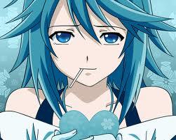 Однак справжнім засновником традицій сучасного аніме вже по Другій світовій війні став Тедзука Осаму, знаний як «бог аніме і манґи» — він заклав основи того, що пізніше еволюціонувало в сучасні аніме-серіали. Наприклад, Тедзука запозичив у Діснея і розвинув манеру використання великих очей персонажів для передачі емоцій; саме під його керівництвом виникали перші твори, які можна віднести до ранніх аніме. У 1963 році Осаму Тедзука, заснував студію «Mushi Productions» і випустив свій перший аніме-серіал «Tetsuwan Atom». Це стало початком буму аніме. Протягом 1970-х аніме активно змінювалося, потихеньку втрачаючи зв'язки зі своїми іноземними прабатьками і народжуючи нові жанри, такі, якмеха. З'являлися такі твори, наприклад, як «Lupin III» або «Mazinger Z». У ці роки розпочали свою кар'єру багато відомих режисерів і сценаристів, зокрема Міядзакі Хаяо, Осії Мамору та Мацумото Лейдзі. Започатковані численні цикли серіалів і повнометражних фільмів («Галактичний експрес 999», «Кінотеатр світових шедеврів»), що сформувало «серіальне» обличчя японської анімації. До 1980-тих аніме і манґа широко розповсюдилися в Японії, і переживали свій так званий «Золотий вік». Були випущені перші серіали з циклу «Gundam», почала свій шлях до вершиниРуміко Такахаші. У 1988 році повнометражний фільм «Akira» встановив рекорд бюджету аніме-фільму і створив абсолютно новий стиль анімації. 1990-і та 2000-і роки стали часом широкого визнання аніме за межами Японії. «Akira» і «Ghost in the Shell», що вийшов у 1995 році, вперше об'єднали традиційну анімацію і комп'ютерну графіку, здобули популярність у всьому світі. У 1997 повнометражний аніме-фільм «Принцеса Мононоке» зібрав 160 мільйонів американських доларів в Японії. За майже сторічну історію аніме пройшло довгий шлях розвитку від перших експериментів в анімації, фільмів Тедзуки до нинішньої величезної популярності у всьому світі. З роками сюжети аніме, спочатку розрахованого на дітей, ставали все складнішими, проблеми, що висвітлюються, все серйознішими. З'явилися аніме-серіали, розраховані на підліткову аудиторію — хлопців і дівчат тінейджерського віку. Ці серіали знайшли фанатів і серед дорослих, а в окремих випадках навіть літніх людей. У своєму розвитку аніме мусило наздоганяти манґу, яка зародилася набагато раніше і на той час вже завоювала популярність серед населення Японії. Сьогодні аніме є унікальним культурним явищем, яке об'єднує як серіали для дітей (жанр кодомо) — аніме в його початковому розумінні, так і підліткові твори, часто серйозні —сьонен (аніме для хлопців), сьодзьо (аніме для дівчат) і навіть повноцінне «доросле» аніме. Існує також схожа на європейську традиційна та експериментальна мультиплікація (роботи Като Куніо, жанр ґа-німе), що в Японії теж зветься «аніме». Етимологія Японське слово «аніме», що означає «анімація», пускає коріння 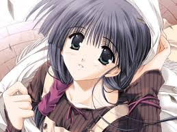до англійського слова «animation», запозиченого і скороченого до трьох складів. Не зважаючи на більшу поширеність скороченої форми — «аніме» — обидва слова мають однакове значення в японській мові: вони позначають будь-яку анімацію, незалежно від її стилю і країни виробництва. За розповсюдження японської анімації за межі Японії, слово стало входити у склад інших мов як позначення анімації, яку вироблено в Японії або що має характерні для неї стилістичні ознаки. У японській мові повністю відсутній силовий наголос, тому японські слова звичайно одержують наголос залежно від традицій вимови мови-позичальника. Слово «аніме» в українській мові сталого наголосу не має, поширено два варіанти вимови — аніме? та а?німе. Особливості 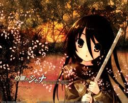 Головною особливістю аніме як явища є загальна орієнтація на дорослішу аудиторію ніж більшість анімації. В інших країнах мультиплікація зазвичай є переважно дитячим жанром, що дуже звужує рамки цього мистецтва. Аніме ж орієнтується головним чином на підлітків, молодь, а також, хоч і менше, на дітей і дорослих людей. Відповідно, аніме не має жанрових обмежень «дитячого мистецтва». Крім того, загальна спрямованість на дорослішу аудиторію виражається в більшій увазі до філософської та ідеологічної складової, переважанні «дорослих» мотивів в тематиці, і, зокрема, меншою табуйованістю тем сексу та насильства в культурі в цілому. Зараз аніме це самостійне мистецтво з власними традиціями, канонами, класикою. Фактично анімація Японії є окремим культурним пластом, включає безліч унікальних сюжетних та ідейних символів, шаблонів, стереотипів і типажів. Простими прикладами можуть служити специфічні для аніме жанри, на зразок меха. Велика частина аніме створюється з розрахунком на конкретну, часом досить вузьку, цільову аудиторію. Критеріями ділення можуть бути стать, вік, психологічний тип глядача. Вибраний таким чином метажанр задає загальну спрямованість твору, впливаючи на його сюжет, ідеї і навіть стиль малювання. Дитяче (Кодомо) аніме становить лише частину від всієї анімаційної продукції, що випускається на території Японії. Графіка Малознайомі з аніме люди серед ознак аніме зазвичай в першу чергу згадують великі очі персонажів. Насправді, аніме-персонажі виділяються не стільки розміром очей, скільки увагою, приділеною їх деталізації по відношенню до всієї решти особи. Ніс і рот зазвичай зображаються декількома хвилястими лініями, за винятком моментів, коли персонаж говорить. Проте існують твори, в яких використовується «реалістичне» малювання, — ніс, рот і скроні рівно з іншими деталями малюються і затінюються з більшою точністю. По очах часто можна зробити висновки про персонажа в цілому. Позитивні, веселі, доброзичливі головні герої зазвичай малюються з великими, блискучими, повними життя очима; замкнуті, похмурі або негативні мають звужені очі, іноді закриті або відтіняються чубом, часто їх малюють схожими на очі якого-небудь гострозорого хижого птаха або змії; хитрі або підкреслено-ввічливі персонажі мають очі лисиці — наче весь час закриті, ніби персонаж постійно посміхається, проте приблизно такі ж формою можуть мати і звичайні соні; якщо персонаж не є романтичним, але при цьому не злий, хитрий або замкнутий, художники можуть забезпечити його достатньо великими очима, але з маленькими зіницями-крапками; крім того, якщо персонажа раптом позбавляють магічним засобом волі або навіть душі, його очі втрачають блиск і стають млявими — з них зникають всі відблиски. У дітей очі зазвичай зображені дуже великими, що зображає їх відкритість, люди похилого віку ж (за украй рідкісним винятком) мають очі маленькі, з маленькими зіницями. В цілому чим старше персонаж - тим меншими в нього малюються 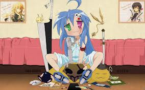очі, що, до речі, відповідає тенденції дорослішання в людей. Окуляри є додатковим засобом виразності, будучи неодмінним атрибутом ерудитів (на противагу ексцентричним геніям), різних скромниць або отаку. Волосся в аніме зазвичай складається з пасм. Зачіски персонажів можуть мати найрізноманітніші, деколи дивовижних форм і кольорів. Волосся, а також деталі одягу персонажів, часто підпорядковують вітру або інерції, примушуючи їх несинхронно рухатися при переміщеннях персонажа. Волосся різних кольорів спочатку було способом «персоніфікувати» героїв, зробити їх помітно різними. Окрім того в країні де у всіх жителів волосся майже однакового кольору червоне, зелене чи синє волосся сприймається саме як символічне, а не як неприродне. Сьогодні, коли образи персонажів опрацьовуються аж до найдрібніших деталей особистості та манер поведінки, різноколірне волосся не є необхідністю, швидше — традицією. Крім того, колір волосся часто відображає характер персонажа. Наприклад, руде волосся є характерним індикатором запальності. Світле волосся також указує на іноземне походження героя, оскільки більшість японців мають темне волосся. В порівнянні із «західною» анімацією тіло та його частини (за виключенням обличчя) малюються незрівнянно реалістичніше, в цілому анатомічні пропорції людського тіла дотримуються досить точно. Деякі види класичного і сучасного малювання персонажів. Раніше художники економили на анімації (зловживали статичними кадрами), гірше промальовували тло тощо, але для компенсації усього цього значно більше уваги приділяли обличчям та особливо очам головних персонажів. Тому краще промальовані, складніші дизайни облич персонажів «класичного», аніме у порівнянні з сучасними на цьому прикладі не є випадковістю. Оскільки аніме-серіали зазвичай демонструються на телебаченні з частотою близько серії в тиждень, для їх створення задіюють штат з сценариста, режисера, дизайнера і декількох десятків аніматорів. Крім того, щоб укладатися в графік виходу, по можливості, без втрати якості, використовуються так звані «прийоми обмеженої анімації». Вони включають перемальовування окремих частин малюнка із збереженням більшої частини картинки незмінною, статичні задні плани, спрощені форми передачі емоцій. Однак слід зазначити, що в міру розвитку комп'ютерної графіки і відповідно здешевлення виробництва середня якість анімації в цілому покращується і зараз ці прийоми використовуються значно менше та обмеженіше ніж в часи «золотого віку» аніме (80-ті роки). Передача емоцій в аніме є приводом для окремої розмови. Крім традиційних для аніме видів прояву відчуттів персонажем — зміною виразу обличчя або тону його голосу, використовується ряд інших прийомів. Емоції можуть зображатися підкреслено нереалістично, гіпертрофовано — персонажі говорять із закритими очима, щоб передати безапеляційність, або приймають картинно демонічний вигляд, коли проявляють гнів. У комедійних ситуаціях, з метою показати несерйозність відчуття, застосовуються піктограми, такі, як картинка «крапельки поту» або вен, що виникають поверх голови героя, або в рамці над нею. Крім «серйозного» малювання існує також популярний стиль «Тібі» або «super-deformed» (SD), в якому персонажі малюються спрощено, з непропорційно великими головами і очима на пів обличчя. Зазвичай SD-малювання застосовується в комедійних ситуаціях, оскільки видає явну несерйозність, пародійність того, що відбувається. Проте, існують серіали, цілком зроблені в такій манері; тут малювання використовується, щоб створити симпатію до «маленьких і пухнастих» головних героїв. Так, наприклад, в комедійному серіалі «Сім образів Ямато Надешіко» головна героїня 90% екранного часу проводить в своїй чібі-формі, поводячись так, немов абсолютно не від світу сього. Інші ж персонажі, адекватніші, зображені, відповідно, цілком звичайними. Сюжет Як і у випадку кінематографу, різноманітність сюжетів аніме обмежена лише фантазією сценариста. Одночасно з аніме, що розповідає про паралельні реальності і космос, є таке, що описує історичні події, або відтворює повсякденне життя головних героїв в звичайному Токіо. Проте, різні жанри накладають різні відбитки на сюжети аніме, і часто визначають загальну манеру побудови або ключові моменти сюжетної лінії серіалу. 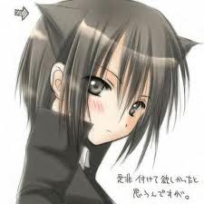 Так, наприклад, твори, звані «сьонен-пригоди» часто мають передбачений канонічний вигляд: велику частину серіалу головний герой збирає команду прихильників і вчиться новим прийомам ведення бою, долаючи при цьому дрібні проблеми, щоб врешті-решт перемогти свого головного супротивника. Після цього серіал або закінчується, або повертається до початку: позначається сильніший, найнебезпечніший ворог. Один такий цикл іноді називають аркою. Поширено також нестандартне схрещування звичних шаблонів. Наприклад, комедія/бойовик «Сталева тривога» оповідає про молодого, але бравого вояка Соске Саґару, якого призначили на навчання в школу — охороняти потенційну жертву. Гармонійне переплетення шкільних комедійних сценок і серйозного воєнізованого сюжету компенсує недоліки обох ліній окремо. Незважаючи на велику кількість серіалів, зроблених за канонами жанру, великою є і кількість оригінальних творів. Прикладом серіалу з нестандартною сюжетною лінією може служити «Gantz» — бойовик, головні герої якого — Кей Куроно і Масару Като — загинули під колесами поїзда метро, але воскресли нерухомою чорною кулею, яка знаходиться в кімнаті токійського готеля, — для того, щоб брати участь в жорстокій грі на виживання, вийти з якої можна, лише заробивши 100 очок. Всесвіти, в яких відбувається дія серіалів, можуть приймати будь-які форми, від класичних фентезі-світів до популярізованого американськими авторами кіберпанку («Ghost in the Shell», «Serial Experiments Lain») або розвиненого аніме паропанку («Fullmetal Alchemist», «Стімбой»). Історії фантастичних світів можуть серйозно відрізнятися від звичної нам: наприклад, в аніме «Fullmetal Alchemist» замість фізики розвинено мистецтво алхімії, в аніме «Trigun» дію відбувається в далекому майбутньому, на пустинній планеті, серед останків втрачених технологій. Серіал «Вовчий дощ» малює постапокаліптичний світ, в якому люди одного разу програли самі собі, і залишили величезні поля битв, усіяні скелетами бойових механізмів. Велика частина аніме-серіалів має яскраво виражений емоційний та ідейний підтекст. Акуратно, зазвичай без фальшу, режисер образами створює відповідний емоційний фон для передачі своїх думок. Популярними ідеями є: ідея стійкості, небажання здаватися як завгодно могутнім людям або обставинам, ідеї самовизначення і вибору життєвого шляху, мораль людини. Різний вік цільової аудиторії часто впливає на ідейний підтекст твору: сьонен, що звичайно адресуються хлопцям старше за дванадцять років, частіше містять «простий» емоційний ряд (не здаватися, захищати друзів, і т. д.) з меншим опрацьовуванням деталей, ніж філософські або психологічні твори для дорослих. «Простота», проте, не означає, що ідеї таких серіалів «дитячі» або навіть «наївні», «максималістичні» — або що такі серіали не розраховані на старше покоління. У серйозніших серіалах розглядаються питання сенсу життя, моралі, проблеми ескапізму, самотності і розділеності людей, релігії. Часто сюжет і стилістика аніме запозичуються з твору, що екранізується, зазвичай — манґи або «легкої новели». Іноді при цьому сюжет аніме може достатньо сильно відрізнятися від сюжету манґи: так, в аніме можуть бути додані герої, відсутні в манзі, змінена кінцівка і тому подібне. Символіка Однією з особливостей яка відрізняє манґу та аніме від їхніх західних аналогів, — розвинена символічно-графічна мова, що дозволяє декількома штрихами передати досить складні емоції або виразити характер героя.
Звук та музика 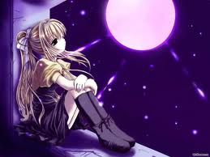 Для передачі емоційних відтінків і управління настроєм глядача в аніме, як і в кіно, активно використовується звукова і музична складові. Аудіодиски з музичним супроводом після виходу серіалу видаються окремо, і часто можуть конкурувати за популярністю з звичайними альбомами співаків. Тому виконанням пісень і створенням музики для аніме звичайно займаються відомі і талановиті співаки, групи і композитори. Найактивніше в аніме використовується так звана «атмосферна музика» — тематичні композиції, використовувані для задання тону сцени. Відкриваюча і закриваюча пісні зазвичай виконуються відомими поп-зірками або музичними групами і є невід'ємною частиною аніме-серіалу. Відкриваюча композиція створює у глядача потрібний настрій для проглядання серіалу, відновлює в пам'яті його загальний настрій. Закриваюча композиція може підкреслювати ключові моменти аніме, його ідеї в цілому, і зазвичай помітно спокійніше, ніж відкриваюча. Обидві композиції є в деякому роді «візитною карткою» аніме: перша знайомить глядача з серіалом, а друга підводить підсумки серії. Актори, що озвучують ролі в аніме, називаються японським словом «сейю». Професія сейю популярна і розвинена в Японії, ось чому озвучення аніме-серіалів вигідно відрізняється від аналогічних робіт в інших країнах. Багато сейю за сумісництвом також є естрадними виконавцями — наприклад, сейю Меґумі Хаясібара, що брала участь в створенні більш ніж півсотні серіалів дуже популярна і як співачка. Вона ж і записувала тематичні пісні для деяких із знятих при її участі аніме. Окрім звичайних альбомів («OST», англ. Original Soundtrack) з музикою з серіалу, сейю іноді видають колекційні набори дисків, присвячених конкретним персонажам, так звані «альбоми персонажів». У них включаються композиції, присвячені в аніме цим персонажам, пісні цього виконавця і аудіовставки — завдяки яким у глядача складається враження, що пісні виконує сам персонаж. Також видаються «диски з аудіопостановками», що містять невеликі аудіо-дополненія до серіалу, зазвичай не пов'язані з головною сюжетною лінією або ж пародійні. Жанри аніме 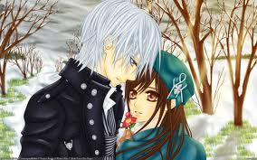
Формат аніме 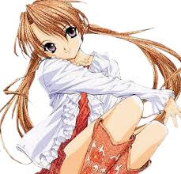 Аніме, як і інша відеопродукція, створюється з розрахунком на певний вид розповсюдження - показ по телебаченню, в кінотеатрах, продаж на відеоносіях, розповсюдження через інтернет. Вибраний метод накладає свій відбиток на твір, оскільки істотно різняться і виробничі процеси, і бюджети, і умови перегляду. Так, в телесеріалі, через його природу можна умістити значно докладнішу розповідь, ніж у фільм, проте якість малювання часто сильно поступається фільмам і OVA, оскільки серіал зазвичай не розрахований на повторний перегляд. Якщо твір виявився успішним, то іноді виходять його продовження або перевидання в інших форматах. Наприклад, відомий серіал «Tenchi Muyo» спочатку вийшов як OVA з декількох серій. Згодом з'явилися декілька фільмів, три сезони телесеріалу по 26 серії кожен, а також декілька додаткових історій. Незалежно від початкового формату, будь-яке аніме рано чи пізно виходить на відеоносіях, зазвичай — на DVD. Телесеріал 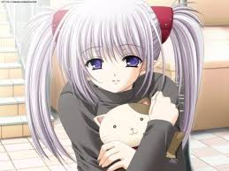 Телесеріал (TV) — аніме, що складається з безлічі коротких розділів (серій), призначене для показу по телебаченню з певною періодичністю (зазвичай одна серія в тиждень). Як правило, тривалість однієї серії становить 22–24 хвилини, що разом з рекламою утворює стандартний півгодинний блок. Іноді зустрічаються серії по 12 хвилин — для показу відразу двох серій блоком. Ще рідше можна зустріти п’яти- і трихвилинні серії. Тривалість серіалу зазвичай дорівнює сезону, що складається з 12-13 серій (оскільки в тривалість календарного сезону укладається 12-13 тижнів). Найпоширеніші серіали з 24-26 серій, хоча існують як значно довші, за сотню серій («InuYasha», «One Piece», «Naruto»), так і коротші («Hellsing», «Неспокійні серця»). Останні, втім, зустрічаються рідше, ніж 26-серійні, тому часто під «сезоном» розуміють саме піврічні набори серій. Відхилення від чисел кратних 13 чи 26 для серіалів не звичні і рідко коли перевищують 2-3 серії. Як правило нестандартна кількість серій означає, що серіал з якихось причин було обірвано. Прикладом є "Дванадцять королівств", серіал початково розраховували на 75 серій, але внаслідок падіння рейтингу його обрізали обмежившися 45. OVA 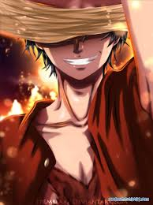 OVA — аніме, створене спеціально для випуску на відеоносіях, таких як відеокасети або DVD. Зазвичай OVA є фільмом або коротким серіалом — від двох до шести серій, який створюється без розрахунку на показ по телебаченню. Проте, трапляється, що популярний OVA-серіал все-таки потрапляє на телеекрани. В наш час стандартна тривалість однієї серії OVA — 23–25 хвилин, практично як і телевізійної. У 1980-х же і на початку 1990-х випускалися годинні і довші OVA. OVA часто використовується для перевірки потенційної аудиторії серіалу — багато відомих творів починалися з коротких і дешевих вдало розпроданих OVA, а потім наново перезнімалися в повноцінний серіал для показу на телебаченні (наприклад, «Ah, My Goddess!», що отримала продовження у вигляді двох сезонів після успіху OVA). З іншого боку, багато популярних телесеріалів обзаводяться OVA-доповненнями, але в цьому випадку на засобах не економлять і випускають продукт, що не поступається за якістю телесеріалу. Також у форматі OVA випускають свою творчість маловідомі або небагаті студії. Часто OVA версії виявляються цікавішими і кращими подальших TV версій — авторам доводиться «розтягувати» OVA-сюжет на формат серіалу. Розповсюдження Аніме-серіали видаються на території Японії офіційними власниками авторських прав, і зазвичай публікуються на DVD-дисках і відеокасетах незабаром після виходу на екрани. На територіях інших країн працюють фірми-дистриб'ютори, що купують в Японії права на переклад і видання серіалу, і публікують його на DVD. Часто також отримуються права на демонстрацію серіалу по телебаченню. У такому разі фірма-перекупник може укладати з телеканалами контракти на показ отриманого аніме. Проте, далеко не всі відомі аніме-серіали ліцензіюються. Тому вельми популярним є фенсабберство — створення неофіційних субтитрів до офіційного реліза. Фенсаб-релізи найчастіше випускаються навіть ще до того, як виходить DVD версія в самій Японії. Зазвичай субтитри розповсюджуються накладеними на оригінальну картинку у відеопотоці, знятому з цифрового японського ТБ і стислому одним з сучасних кодеків, а також з оригінальним японським звуком. Хоча іноді зустрічаються і зовнішні субтитри. Крім того, набирають популярність релізи з вбудованими субтитрами, що відключаються, в форматі «.mkv» або «.ogm». Критика аніме Разом із зростанням популярності аніме за межами Японії, збільшується і число противників цього виду мультиплікації. Найсерйознішу критику викликає надмірна, на думку багатьох, кількість насильства і еротики в аніме, неадекватна поведінка людей, що захоплюються переглядом і колекціонуванням аніме, — отаку, що інколи виливається в патологічні форми (відхід від реальності, агресивність, близька до наркотичної залежність). В країнах Європи і США, японська мультиплікаційна продукція проходить попередню оцінку, з визначенням вікової аудиторії. Іноді, з метою зменшити вікову планку, видавець вирізує з твору дуже відверті або жорстокі кадри. Багатьом не подобається аніме на емоційному рівні: якщо глядач вважає, що мультфільми створюють тільки для дитячої аудиторії, він очікує і відповідного розвитку сюжету, або відчуваючи дискомфорт від перегляду аніме, розрахованого на юнацьку чи дорослу аудиторії, або відмовляючись від перегляду, створює заочну негативну думку про твір. Також часто глядачам не подобається графічне рішення в аніме — горезвісні «великі очі», або голоси персонажів, через незвичне для європейця звучання слів і вираз емоцій в японській мові. Велика частина критики аніме, справедлива і по відношенню до будь-якого напрямку сучасної масової культури, одним з представників якої, без сумніву, є і японська анімаційна індустрія. |
|
| ---------------------------------------------------------------------------------------------------------------------------------------------------------------------------------------------------------------------------- Аніме | Історія | Етимологія | Особливості | Графіка | Сюжет | Символіка | Звук та музика | Жанри аніме | Формат аніме | Телесеріал | OVA | ГАЛЕРЕЯ ---------------------------------------------------------------------------------------------------------------------------------------------------------------------------------------------------------------------------- |
|